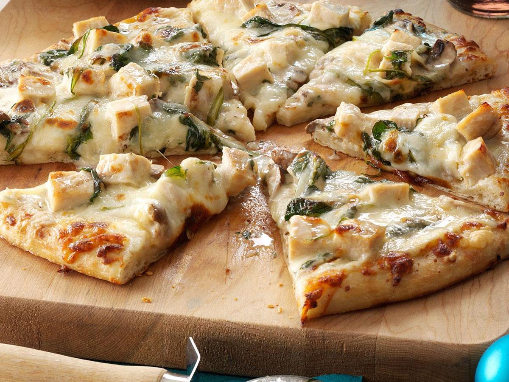

Chicken Alfredo Pizza

Ingredients:
- 1 garlic clove, minced
- 2-1/2 teaspoons butter
- 1-1/2 cups heavy whipping cream
- 3 tablespoons grated Parmesan cheese
- 1/2 teaspoon salt
- 1/4 teaspoon pepper
- 1 tablespoon minced fresh parsley
- 1 prebaked 12-inch thin pizza crust
- 1 cup cubed cooked chicken breast
- 1 cup thinly sliced baby portobello mushrooms
- 1 cup fresh baby spinach
- 2 cups shredded part-skim mozzarella cheese
Instructions
-
In a small saucepan over medium heat, melt butter. Add garlic; cook and stir for 1 minute. Add cream; cook until liquid is reduced by half, 15-20 minutes. Add the Parmesan cheese, salt and pepper; cook and stir until thickened. Remove from the heat; stir in parsley. Cool slightly.
-
Place crust on an ungreased baking sheet; spread with cream mixture. Top with chicken, mushrooms, spinach and mozzarella cheese. Bake at 450° for 15-20 minutes or until cheese is melted and crust is golden brown.